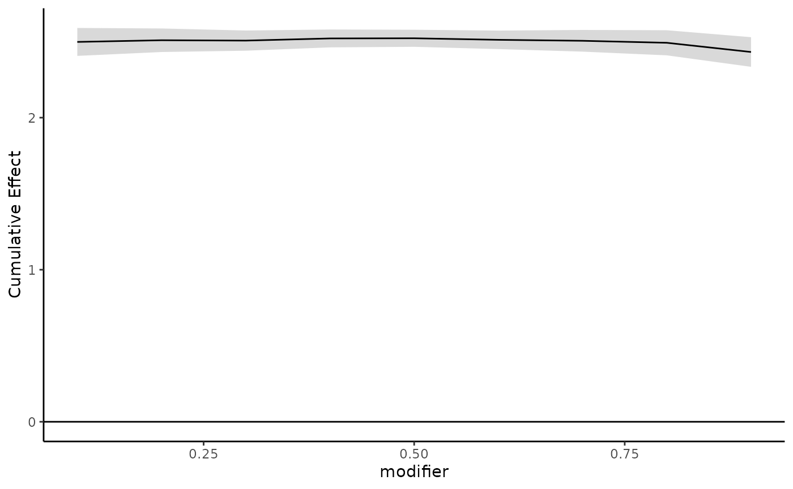

Installation
The latest version of this package on GitHub can be downloaded and installed by
install_github("ddemateis/dlim")
or on CRAN by
install.packages("dlim")
Then the package can be loaded by
Methodology and Applications
See Demateis et al. 2024 for details on methodology and applications.
Functions in the package
The function dlim()
To fit a DLIM using this package, first use the dlim()
function, which creates a cross-basis using the
cross_basis() function and then fits a GAM using using the
cross-basis. dlim() takes a vector of response values,
y, a matrix of exposure history, x, the
modifier variable, modifier, and a matrix of other
covariates, z. Do not include the modifier in
z, as dlim() will add the modifier to the
covariate matrix later in the function. You will also need to specify
the degrees of freedom for the modifier basis, df_m, and
the exposure time basis, df_l. You can optionally specify
whether to penalize, penalize = T or
penalize = F, though the function will default to
penalize = T. We recommend specifying
method = "REML" if penalizing. If the data set is very
large, you can set fit_fn = "bam" so dlim()
uses bam() instead of gam() for model fitting.
See ?bam for more details.
The function predict()
After using the dlim() function to fit a DLIM, you can
use predict() to make predictions with confidence intervals
for any set of modifying values. predict() is an S3 method
for objects of class dlim which takes an object of class
dlim, object, and the type of prediction,
type = "DLF" to predict the distributed lag function or
point-wise effects for a set of modifier, type = "CE" to
predict the cumulative effects for a set of modifiers, or
type = c("CE", "DLF") to predict both the distributed lag
function and cumulative effect. You can pass a new vector of modifier
values to newdata. If left as NULL, then
prediction will be on the original modifier values. The confidence level
can be changed using alpha.
The function plot_cumulative()
After using the dlim() function to fit a DLIM, you can
use the plot_cumulative() function to plot the cumulative
effects and confidence regions for any set of modifying values.
plot_cumulative() takes a vector of modifying values,
new_modifiers, and an object of class dlim,
mod_fit. Optionally, you can provide the name of the
modifier for the plot axis label, mod_name, and a
back-transformation function to mod_trans if the specified
modifier values have been transformed. This function also have the
ability to compare a DLM fit to a DLIM fit. If the dlm_fit
argument is passed a list containing a crossbasis object
from the dlnm package and a fitted DLM model object, then
the plot will also include the estimated cumulative effects and
confidence region for the same modifying values for the DLM. If the
model family is not Gaussian, specify a transformation function using
link_trans.
The function plot_DLF()
After using the dlim() function to fit a DLIM, you can
use the plot_DLF() function to create a grid of plots for
the estimated point-wise effects (i.e. estimated distributed lag
function) and confidence regions for any set of modifying values.
plot_DLF() takes a vector of modifying values,
new_modifiers, an object of class dlim,
mod_fit, and whether to create a grid of plots by modifier
value, plot_by = "modifier", or by particular time points,
plot_by = "time". If you are want each plot in the grid to
be for a time point, you must pass time_pts a vector of
time points. Optionally, you can provide the name of the modifier for
the plot axis label, mod_name, and a back-transformation
function if the specified modifier values have been transformed. This
function also have the ability to compare a DLM fit to a DLIM fit. If
the dlm_fit argument is passed a list containing a
crossbasis object from the dlnm package and a
fitted DLM model object, then the plot will also include the estimated
cumulative effects and confidence region for the same modifying values
for the DLM. If the model family is not Gaussian, specify a
transformation function using link_trans.
The function model_comparison()
You can use the model_comparison function to compare
models with and without interaction, or models of varying levels of
interaction. See Demateis et
al. 2024 for discussion. The model_comparison function
takes a dlim object (must be fit with REML) through the
fit argument. The fit object is the full model. Specify the
null model, either null = "DLM" or
null = "linear" are currently supported. x is
the exposure matrix used to fit fit, B is the
number of bootstrap samples, and conf.level is the
confidence level with default 0.95. The function returns a decision to
reject or fail to reject based on the confidence level.
Example
Using the example data set in the package, fit a DLIM using the
dlim() function. First load the data set:
data("ex_data")
str(ex_data)
#> List of 4
#> $ y : num [1:1000, 1] 21.4 25.4 22.7 27.2 23.5 ...
#> $ exposure:Classes 'data.table' and 'data.frame': 1000 obs. of 37 variables:
#> ..$ PM25_1 : num [1:1000] 11.07 4.84 12.58 14.68 11.36 ...
#> ..$ PM25_2 : num [1:1000] 13.15 5.85 14.35 16.41 9.4 ...
#> ..$ PM25_3 : num [1:1000] 11.17 5.9 20.8 18.95 8.62 ...
#> ..$ PM25_4 : num [1:1000] 7.56 5.36 14.85 11.54 6.67 ...
#> ..$ PM25_5 : num [1:1000] 22.71 5.28 10.67 8.23 9.31 ...
#> ..$ PM25_6 : num [1:1000] 11.4 5.62 9.44 16.92 7.47 ...
#> ..$ PM25_7 : num [1:1000] 7.56 6.98 16.63 7.9 10.18 ...
#> ..$ PM25_8 : num [1:1000] 8.74 5.41 7.37 12.55 10.77 ...
#> ..$ PM25_9 : num [1:1000] 11.03 6.02 13.76 10.69 10.91 ...
#> ..$ PM25_10: num [1:1000] 7.01 6.83 10 6.38 10.38 ...
#> ..$ PM25_11: num [1:1000] 8.45 9.88 6.43 7.84 8.11 ...
#> ..$ PM25_12: num [1:1000] 6.51 8.76 7.74 9.32 10.43 ...
#> ..$ PM25_13: num [1:1000] 10.21 9.4 9.25 10.92 6.96 ...
#> ..$ PM25_14: num [1:1000] 6.23 9.04 10.99 6.77 8.7 ...
#> ..$ PM25_15: num [1:1000] 7.69 9.94 7.29 6.73 10.18 ...
#> ..$ PM25_16: num [1:1000] 9.8 10.36 6.7 9.97 13.58 ...
#> ..$ PM25_17: num [1:1000] 8.4 10.87 10.29 7.69 12.29 ...
#> ..$ PM25_18: num [1:1000] 7.12 7.8 7.17 7.48 14.43 ...
#> ..$ PM25_19: num [1:1000] 7.26 11.51 7.33 6.51 13.51 ...
#> ..$ PM25_20: num [1:1000] 8.71 9.42 7.01 11.32 10.4 ...
#> ..$ PM25_21: num [1:1000] 6.63 7.6 11.68 8.16 9.01 ...
#> ..$ PM25_22: num [1:1000] 10.48 10.42 7.17 5.55 9.79 ...
#> ..$ PM25_23: num [1:1000] 9.16 11.35 6.39 12.78 8.78 ...
#> ..$ PM25_24: num [1:1000] 11.65 8.91 14.66 14.39 12.97 ...
#> ..$ PM25_25: num [1:1000] 13.86 11.61 11.68 9.42 7.31 ...
#> ..$ PM25_26: num [1:1000] 6.84 6.57 10.32 9.14 4.9 ...
#> ..$ PM25_27: num [1:1000] 12.68 7.59 9.3 14.54 8.29 ...
#> ..$ PM25_28: num [1:1000] 8.83 8.7 15.13 11.79 7.29 ...
#> ..$ PM25_29: num [1:1000] 9.09 6.27 11.55 11.31 10.24 ...
#> ..$ PM25_30: num [1:1000] 11.12 8.83 11.69 12.86 6.72 ...
#> ..$ PM25_31: num [1:1000] 8.34 7.71 11.14 9.23 7.81 ...
#> ..$ PM25_32: num [1:1000] 7.58 8.8 11.96 14.72 8.03 ...
#> ..$ PM25_33: num [1:1000] 10.08 7.18 11.98 13.78 7.02 ...
#> ..$ PM25_34: num [1:1000] 11.88 9.19 14.53 13.28 7.86 ...
#> ..$ PM25_35: num [1:1000] 7.14 5.94 13.38 8.76 8.23 ...
#> ..$ PM25_36: num [1:1000] 7 6 7.88 11.14 7.75 ...
#> ..$ PM25_37: num [1:1000] 7.22 8.13 13.02 19.72 11.41 ...
#> $ modifier: num [1:1000] 0.141 0.605 0.375 0.703 0.833 ...
#> $ z : num [1:1000, 1:3] -1.462 -0.44 0.941 0.969 1.708 ...This data set is a list containing the response ($y),
the exposure history ($exposure), the modifier
($modifier), and covariates ($z). Now fit the
DLIM using the dlim function:
dlim_fit <- dlim(y = ex_data$y,
x = ex_data$exposure,
modifier = ex_data$modifier,
z = ex_data$z,
df_m = 10,
df_l = 10,
method = "REML")Note specifying method = "REML along with penalization.
We can quickly look at the object by printing it:
dlim_fit
#> Object of class dlim
#>
#> Family: gaussian
#> Link function: identity
#>
#> dlim(y = ex_data$y, x = ex_data$exposure, modifiers = ex_data$modifier,
#> z = ex_data$z, df_m = 10, df_l = 10, method = "REML")
#> Modifier basis degrees of freedom: 10
#> Exposure time basis degrees of freedom: 10
#>
#> Number of exposure time points: 37
#>
#> Penalization: Yes
#>
#> n = 1000This tells us the GAM was fit using the Gaussian family and identity link function, there are 10 degrees of freedom for both bases, the number of exposure time points is 37, and the model was fit using penalization.
To see predicted cumulative or point-wise effects, we can use the
predict() function. Specify type="CE" to
obtain cumulative effect estimates, type="DLF" to obtain
point-wise effect estimates, or type=c("CE","DLF") to
obtain both. The order does not matter. The following gives cumulative
effect estimates for a modifier value of 0.5, along with upper and lower
confidence intervals:
dlim_pred <- predict(dlim_fit,
newdata = 0.5,
type="CE")
data.frame(cumul_betas = c(dlim_pred$est_dlim$betas_cumul),
LB = c(dlim_pred$est_dlim$cumul_LB),
UB = c(dlim_pred$est_dlim$cumul_UB))
#> cumul_betas LB UB
#> 1 2.521887 2.465761 2.578014The following gives point-wise effect estimates for a modifier value of 0.5, along with upper and lower confidence intervals:
dlim_pred <- predict(dlim_fit,
newdata = 0.5,
type="DLF")
data.frame(betas = c(dlim_pred$est_dlim$betas),
LB = c(dlim_pred$est_dlim$LB),
UB = c(dlim_pred$est_dlim$UB))
#> betas LB UB
#> 1 0.015493436 -0.0088212123 0.03980809
#> 2 0.012681762 -0.0038701390 0.02923366
#> 3 0.009452520 -0.0034498292 0.02235487
#> 4 0.006252764 -0.0055033865 0.01800891
#> 5 0.003529548 -0.0090522753 0.01611137
#> 6 0.001729924 -0.0119363763 0.01539622
#> 7 0.001305969 -0.0117704259 0.01438236
#> 8 0.002738391 -0.0086632348 0.01414002
#> 9 0.006518027 -0.0042045510 0.01724061
#> 10 0.013135728 0.0012408808 0.02503058
#> 11 0.023082344 0.0098801793 0.03628451
#> 12 0.036766674 0.0240577371 0.04947561
#> 13 0.053832923 0.0429503442 0.06471550
#> 14 0.073509141 0.0636647488 0.08335353
#> 15 0.095019208 0.0842061010 0.10583231
#> 16 0.117587005 0.1053237412 0.12985027
#> 17 0.140398284 0.1282795013 0.15251707
#> 18 0.162011780 0.1515156855 0.17250787
#> 19 0.180472918 0.1710107331 0.18993510
#> 20 0.193812020 0.1833817000 0.20424234
#> 21 0.200059408 0.1879785198 0.21214030
#> 22 0.197301455 0.1849772032 0.20962571
#> 23 0.185529686 0.1745899300 0.19646944
#> 24 0.167062793 0.1572475206 0.17687807
#> 25 0.144360981 0.1338786290 0.15484333
#> 26 0.119884457 0.1078931310 0.13187578
#> 27 0.096085930 0.0837886022 0.10838326
#> 28 0.074669984 0.0637996782 0.08554029
#> 29 0.055966672 0.0463572346 0.06557611
#> 30 0.040158546 0.0298310819 0.05048601
#> 31 0.027428157 0.0152862404 0.03957007
#> 32 0.017957869 0.0049832833 0.03093246
#> 33 0.011768375 -0.0005820517 0.02411880
#> 34 0.008423399 -0.0036475010 0.02049430
#> 35 0.007406503 -0.0059269186 0.02073992
#> 36 0.008201245 -0.0082854634 0.02468795
#> 37 0.010291185 -0.0133044965 0.03388687We can also create plots for the cumulative effects and point-wise effects. The following plots the estimated cumulative effects over a grid of modifier values:
plot_cumulative(new_modifiers = seq(0.1,0.9,0.1),
mod_fit = dlim_fit,
mod_name = "modifier")
There are two ways to look at estimated point-wise effects: by
modifier or by time. To create a grid of estimated point-wise effect
plots for a select number of time points, specify
plot_by = time and provide select time points to
time_pts. The following plots estimated point-wise effects
across a grid of modifiers isolated for weeks 10, 20, and 30:
plot_DLF(new_modifiers = seq(0.1,0.9,0.1),
mod_fit = dlim_fit,
mod_name = "modifier",
plot_by = "time",
time_pts = c(10,20,30))To create a grid of estimated point-wise effect plots for a select
number of modifier values, specify plot_by = modifier and
provide select modifier values to new_modifiers. The
following plots estimated point-wise effects across all time points
isolated for modifier values 0.25, 0.5, and 0.75:
plot_DLF(new_modifiers = c(0.25, 0.5, 0.75),
mod_fit = dlim_fit,
mod_name = "modifier",
plot_by = "modifier")We can compare this model to a standard DLM using the
model_comparison function. The full model is
dlim_fit model object, and the null model by default is
"DLM". Then specify the exposure used to create
dlim_fit and the number of bootstrap samples,
B = 5 (we recommend using at least 1000 bootstrap samples,
but use 5 to illustrate quickly). The function returns the decision to
reject or fail to reject the null model based on the default confidence
level conf.level of 0.95.
model_comparison(fit = dlim_fit,
null = "DLM",
x = exposure,
B = 5)
#> 95%
#> "reject"Bibliography
Demateis, D., Keller, K. P., Rojas-Rueda, D., Kioumourtzoglou, M.-A., & Wilson, A. (2024). Penalized distributed lag interaction model: Air pollution, birth weight, and neighborhood vulnerability. Environmetrics, e2843. https://doi.org/10.1002/env.2843